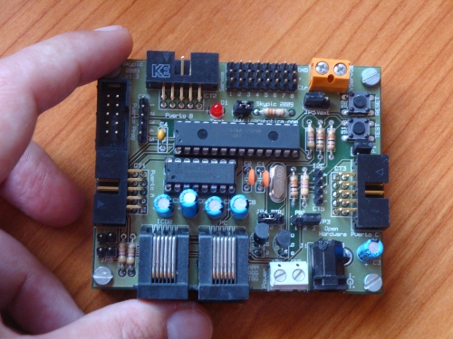
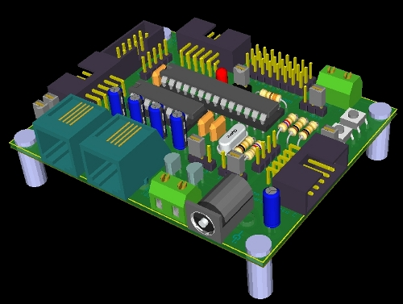

La nueva tarjeta Skypic-2009 ya está probada, y ha sido liberada. Los cambios con respecto a la Skypic 2007 son pocos y ya hablamos sobre ello en este post. El cambio más importante ha sido la migración a Kicad, pasando la Skypic de ser una placa hardware libre a hardware libre2

Toda la información está publicada en la página de la Skypic. Esta imagen es un renderizado 3D hecho con Kicad. Anímate y echa un vistazo a la placa en 3D. Para ello tienes que tener instalado el Kicad (Linux, Mac, windows). Desde Ubuntu/Debian es inmediato:
apt-get install kicad
o bien desde Synaptic. Baja el fichero skypic-2009.zip con las fuentes del proyecto. Descomprímelo. Abre el fichero skypic.pro con Kicad. Pincha en skypic.brd para ver el PCB y luego en la opción “Visualización 3D”. Aparecerá el modelo 3D. Con el botón izquierdo apretado y moviendo el ratón rotaremos la placa para verla desde otro punto de vista.
También están disponibles diferentes fotos en este album.
Con la Skypic-2009, el mundo es un poquito más libre 😉
y ahora una versión 'MIL' para enviarla a la Luna 🙂 y hacer honor al nombre 'Sky-pic' ¿no?
Linda placa y muy bueno el programador, te felicito.
Te comento que escribí un tutorial de KiCAD, y tengo además proyectos realizados con este excelente software, puedes ver esta información en mi blog.
http://sergiols.blogspot.com
saludos.
Hola Felixls,
Muchas gracias por el tutorial. Es muy útil 😉